《追色手记30》学习资料
Dixon Kwan：浓郁橙青夜景人像与 Lightroom 仿色实操
视频标题 | 【追色手记30】这个色调绝了！Dixon Kwan超美夜景人像，原来这么拍！ |
作者 | 摄影师聿铭 |
时长 | 约 10 分 46 秒 |
来源 | https://www.bilibili.com/video/BV194421Z7Ve/ |
整理日期 | 2026-05-22 |
说明本文根据视频音频转写、画面截取与内容校对整理，保留学习所需的方法、步骤和关键截图，不包含逐字稿。
Dixon Kwan 作品参考截图
以下截图用于观察 Dixon Kwan 夜景人像中的橙红肤色、青蓝冷光、橙红暖光、低调直方图与少色高饱和的画面秩序。
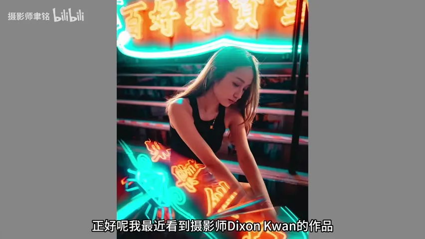 霓虹店招：夜景入口 | 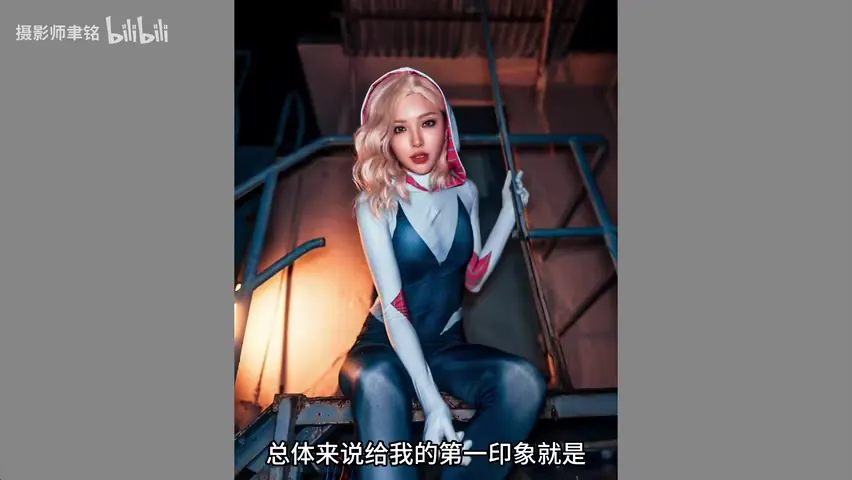 夜景人像：冷暖并置 |
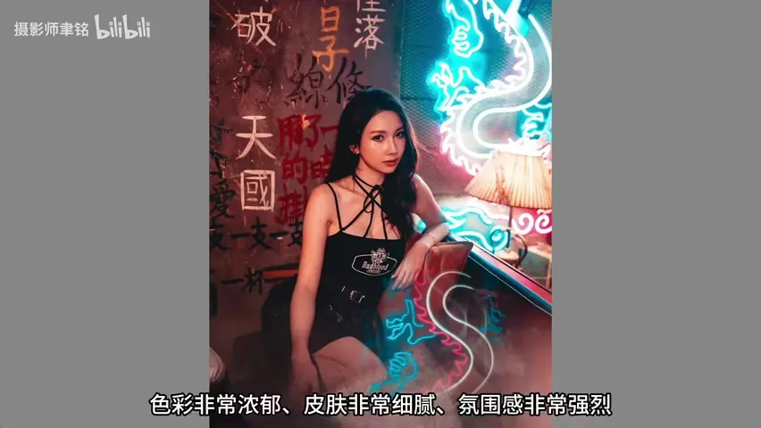 浓郁肤色与灯光 |
橙青风格拼图 |
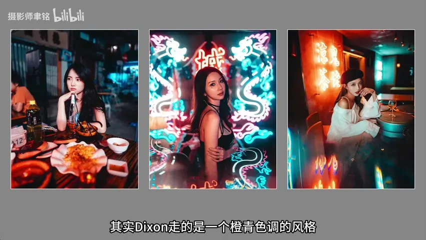 代表画面：少色高饱和 | 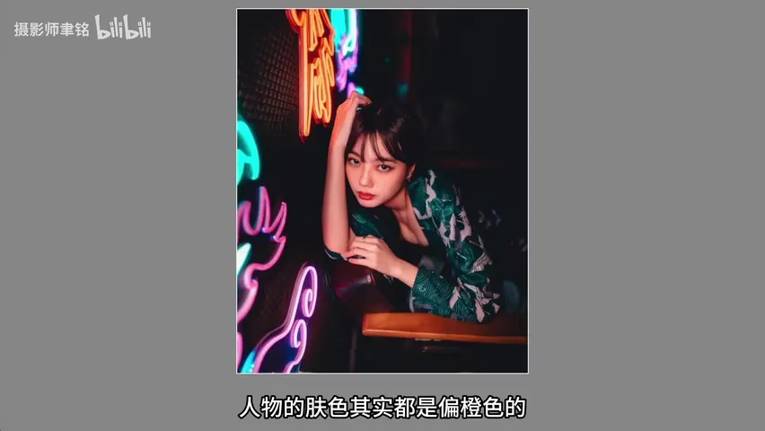 橙红肤色样本 |
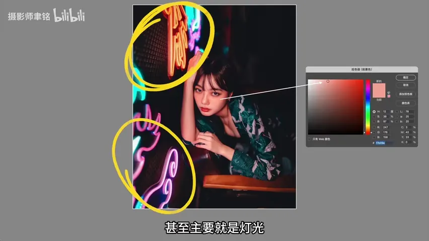 冷暖灯光取色 | 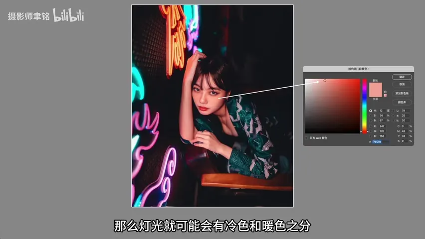 两色逻辑：青蓝/橙红 |
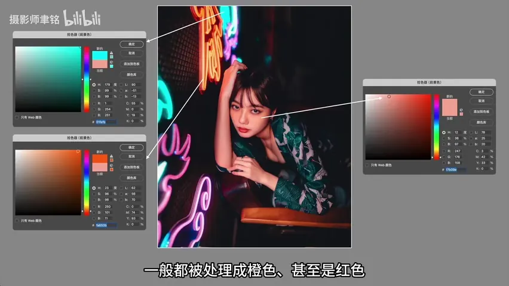 色彩总结 | 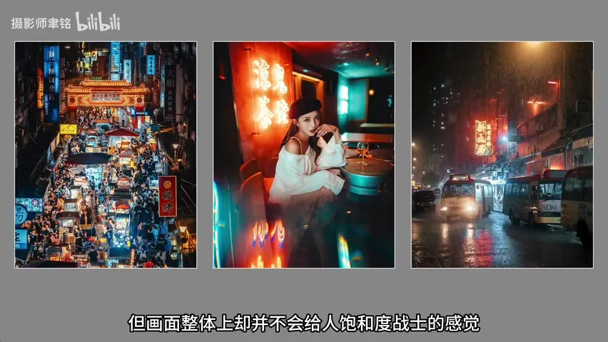 低调宽跨度直方图 |
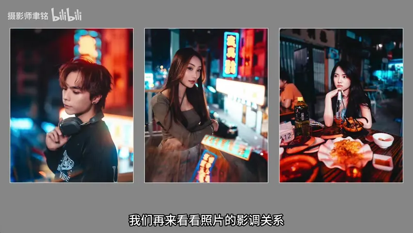 肤色与灯光样本 |
风格总结：色彩与影调 |
一页速览
风格核心 | Dixon Kwan 的夜景人像色彩浓郁、皮肤细腻、氛围强，整体走橙青色调。 |
色彩结构 | 人物肤色偏橙红；冷色灯光和暗部偏青蓝；暖色灯光偏橙红。颜色数量少，但饱和度不低，所以浓郁却不杂乱。 |
影调结构 | 夜景整体偏暗，直方图峰值靠左，但因灯光存在会跨到亮部；最暗部通常缺失一小段。 |
实操顺序 | 提阴影压黑色 -> 降纹理 -> 曲线抬黑压阴影 -> 校准右右左 -> HSL 橙/蓝 -> 阴影与高光加淡蓝 -> 降噪 -> 暗角 -> 人物皮肤蒙版。 |
学习目标
能识别夜景人像中的橙红肤色、青蓝冷光和橙红暖光关系。
理解少色高饱和为什么可以浓郁但不脏。
掌握用明度曲线制造暗部缺失和夜景胶片感的方法。
能用 HSL 只抓橙色和蓝色两个关键色，快速建立橙青方向。
能用颜色分级、降噪、暗角和皮肤蒙版完成夜景人像收尾。
核心方法：三层拆解
维度 | 观察重点 | 本片结论 |
色彩 | 肤色、冷光、暖光分别是什么颜色。 | 肤色橙红，冷光青蓝，暖光橙红；颜色少但饱和高。 |
影调 | 直方图峰值和跨度。 | 峰值靠左、阴影面积多，但灯光让直方图延伸到亮部，最暗端略缺失。 |
修饰 | 夜景噪点、主体皮肤、边缘氛围。 | 降噪、暗角、人物皮肤蒙版是让夜景人像干净细腻的关键。 |
Lightroom 实操流程
基础影调夜景背景暗，先提阴影；黑色色阶略压，让暗部更实。整体降低纹理，让女生人像细节过渡更柔和。
曲线抬黑明度曲线最左端上抬，让直方图暗部右移并出现缺失；阴影再收回一点，避免暗部太灰。
校准定橙青红、绿、蓝三原色按右右左调整，让画面快速往橙青色调方向走。
HSL 精修暖色只动橙色：色相往红、饱和略降、明亮度提高，让肤色橙红且更白净。冷色只动蓝色：色相往青、饱和大幅提高、明亮度略降，让背景青蓝灯光显现。
颜色分级画面仍偏暖时，在阴影和高光都加入色相约 210 的淡蓝色，综合暖色并营造夜景氛围。
收尾细节面板手动降噪；效果面板加暗角突出人物；蒙版自动识别人像，只选面部/身体皮肤，降低对比度和纹理做自然磨皮。
工具速查表
工具 | 用途 | 本片操作 | 注意点 |
基础面板 | 恢复暗部和柔化细节 | 提阴影、压黑色、降纹理。 | 夜景不能提得太平，暗部要实。 |
曲线 | 制造暗部缺失 | 抬黑并压回阴影。 | 抬黑后必须防止整体发灰。 |
校准 | 快速建立橙青方向 | 红绿蓝右右左。 | 调完橙色会偏重，后面用 HSL 修。 |
HSL | 抓两个关键色 | 橙色修肤色，蓝色修冷光。 | 颜色少是画面干净的原因，别乱动太多色。 |
颜色分级 | 补夜景冷色氛围 | 阴影和高光都加淡蓝。 | 淡蓝用来平衡暖色，不是染蓝全图。 |
细节/效果 | 降噪、聚焦主体 | 手动降噪，加暗角。 | 夜景噪点容易显脏，暗角要自然。 |
蒙版 | 优化皮肤 | 降低皮肤对比度和纹理。 | 磨皮要局部做，不要把全图糊掉。 |
关键截图与讲解
图 01 | 00:18 | 夜景人像问题。
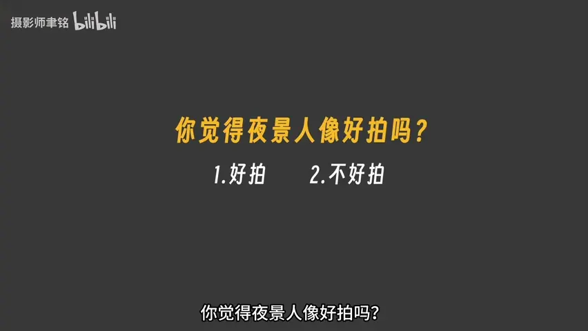
学习要点夜景人像难在好看、有个性和有特点。
图 02 | 00:38 | Dixon Kwan 风格引入。
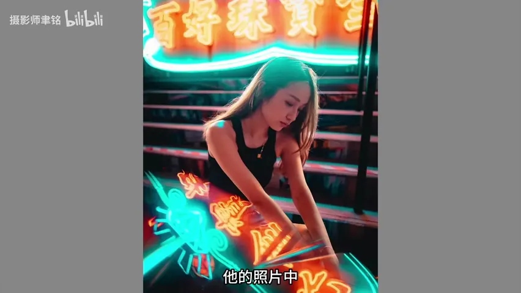
学习要点作品中色彩浓郁、皮肤细腻、氛围强烈。
图 03 | 01:01 | 橙青色调。
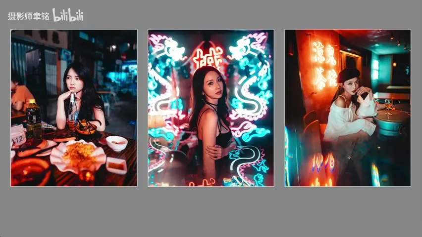
学习要点Dixon 夜景人像的核心是橙青冷暖对比。
图 04 | 01:13 | 肤色偏橙红。
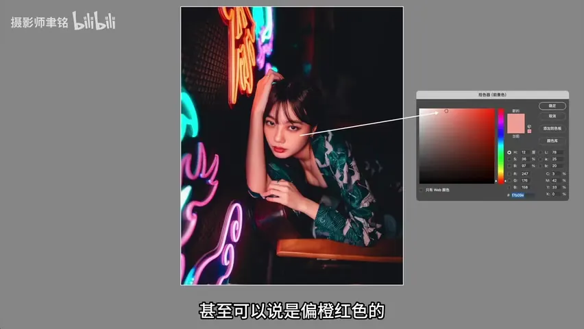
学习要点与常见橙黄肤色不同，本片强调橙红肤色。
图 05 | 01:47 | 冷色光偏青蓝。
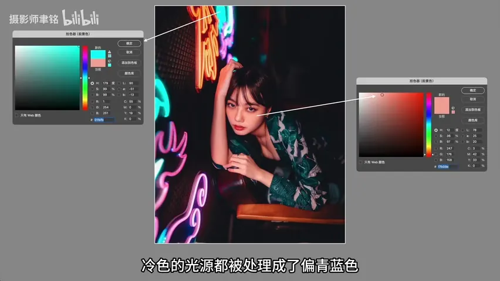
学习要点冷光和暗部颜色接近，形成统一的夜景冷色。
图 06 | 02:01 | 暖色光偏橙红。
学习要点暖灯光强化和肤色一致的橙红氛围。
图 07 | 02:28 | 少色高饱和。
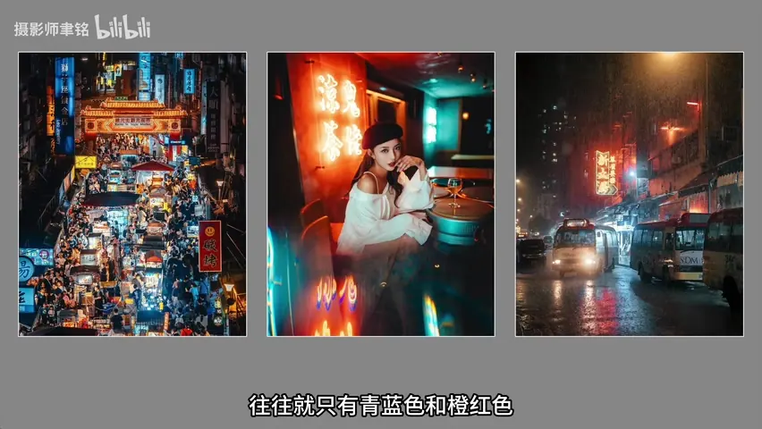
学习要点只有青蓝和橙红两大色系，所以饱和高也不杂乱。
图 08 | 02:47 | 直方图偏左但跨度大。
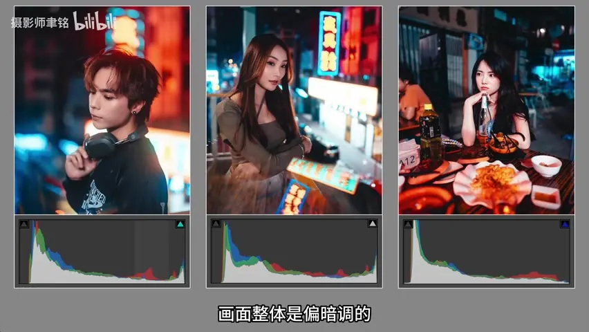
学习要点夜景暗部多，但灯光把直方图拉到亮部。
图 09 | 03:19 | 最暗部缺失。
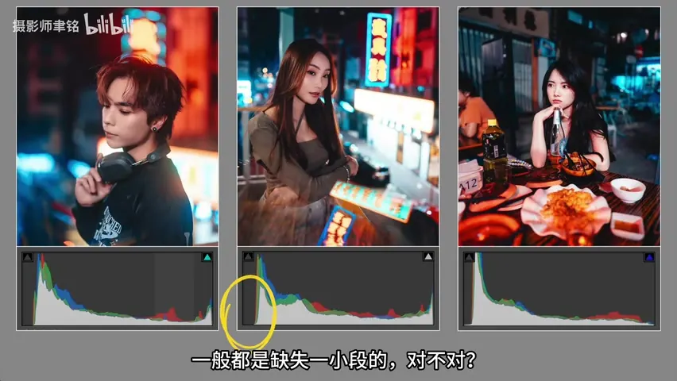
学习要点后续曲线抬黑要对应这个特征。
图 10 | 04:29 | 提阴影压黑色。
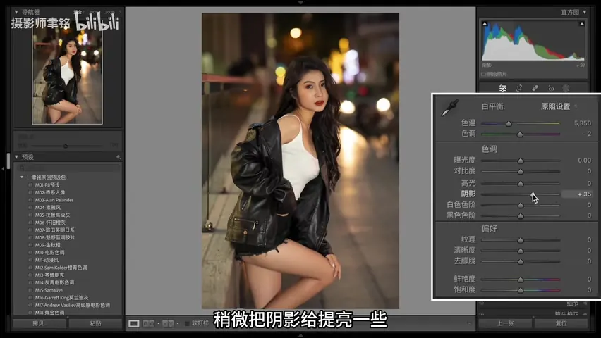
学习要点背景有细节，暗部仍然实。
图 11 | 05:12 | 曲线抬黑。
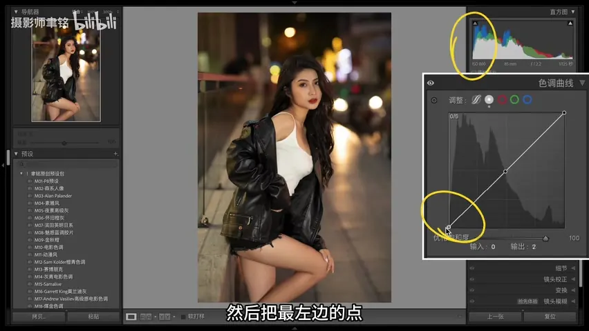
学习要点暗部出现缺失，夜景质感更润。
图 12 | 05:50 | 校准右右左。
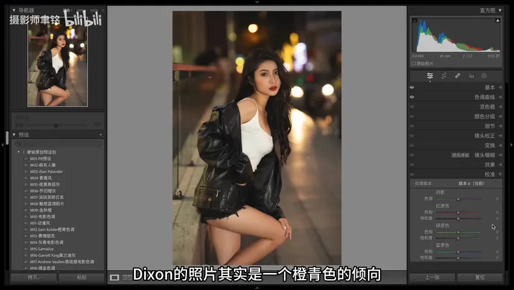
学习要点快速进入橙青方向。
图 13 | 06:19 | HSL 橙色修肤色。
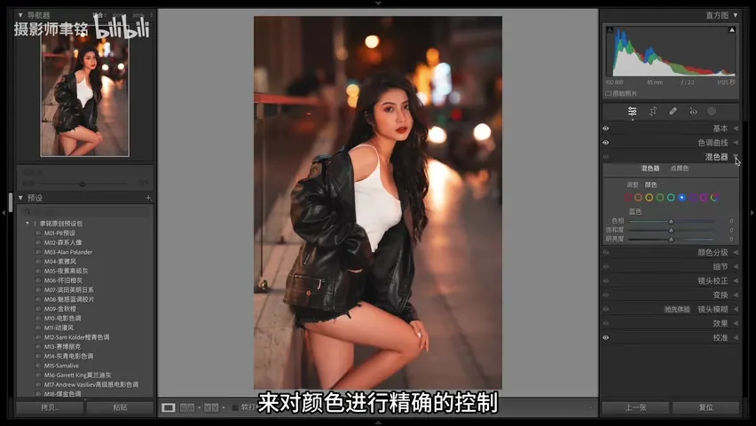
学习要点肤色向橙红，提亮后更白净。
图 14 | 07:08 | HSL 蓝色修冷光。
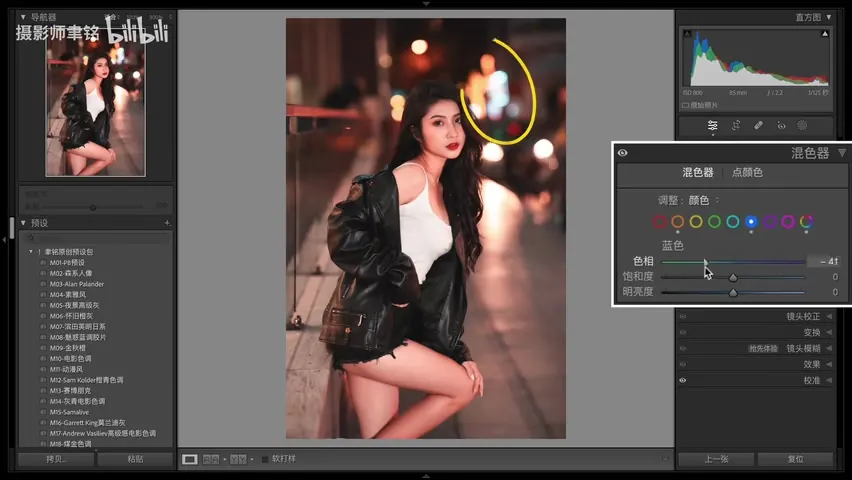
学习要点蓝色往青，饱和提高，青蓝灯光显现。
图 15 | 07:54 | 阴影加淡蓝。
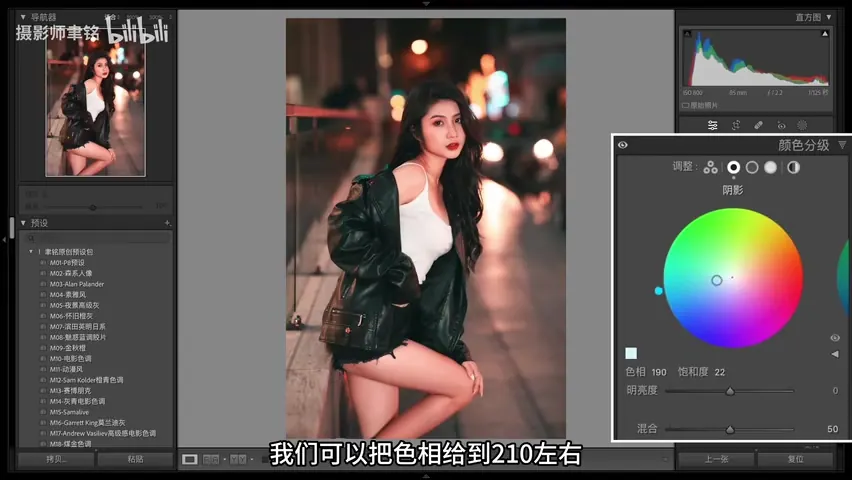
学习要点平衡暖色并强化夜景氛围。
图 16 | 08:26 | 细节降噪。
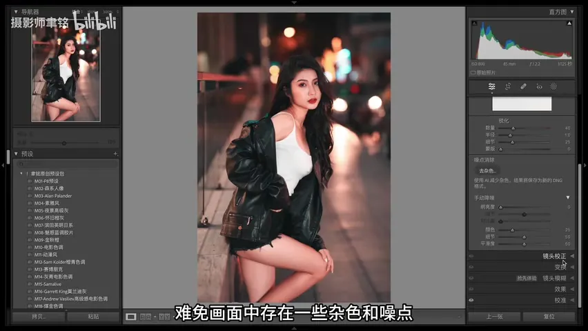
学习要点夜景画面需要处理噪点和杂色。
图 17 | 08:41 | 暗角。
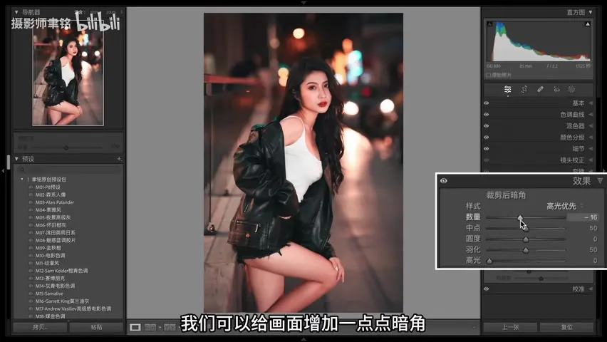
学习要点让氛围更重，并突出主体。
图 18 | 09:08 | 人物皮肤蒙版。
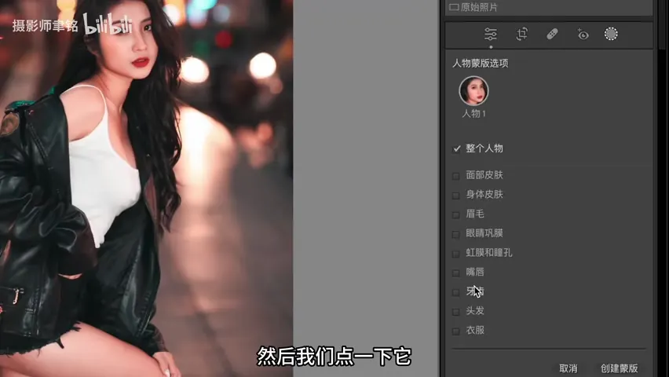
学习要点自动选择面部和身体皮肤做局部优化。
图 19 | 09:31 | 降低对比度和纹理。
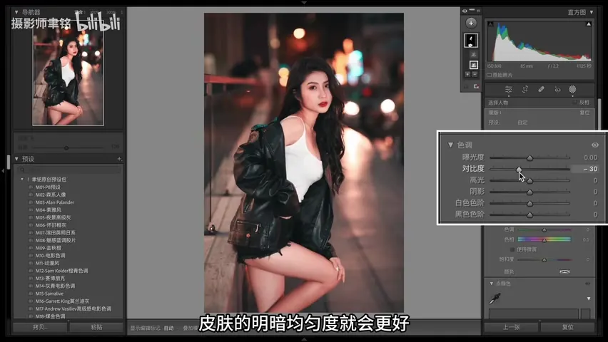
学习要点皮肤更均匀细腻。
图 20 | 09:55 | 最终前后对比。
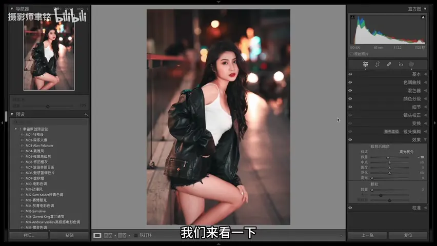
学习要点夜景素材转为浓郁橙青风格。
图 21 | 10:10 | 放入参考图对比。
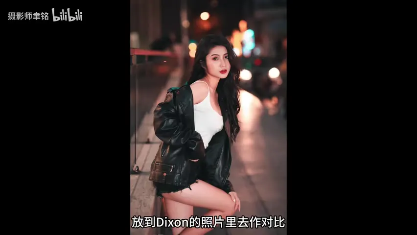
学习要点调色方向与 Dixon 作品接近，不突兀。
练习任务
选择一张夜景人像，画面中最好同时有冷色灯光和暖色灯光。
先用取色或肉眼判断肤色是否可推向橙红，冷光是否可推向青蓝。
基础面板只做影调准备提阴影、压黑色、降纹理。
曲线抬黑后观察直方图暗部是否出现一小段缺失。
HSL 只重点调整橙色和蓝色，再用颜色分级补淡蓝夜景氛围。
最后做降噪、暗角和皮肤蒙版，保存与参考图同屏对比。
复盘清单
检查项 | 通过标准 |
色彩数量 | 主要集中在青蓝和橙红两组颜色，不杂乱。 |
肤色 | 偏橙红且细腻，不脏不灰。 |
冷光 | 青蓝灯光明显，但不抢主体。 |
影调 | 整体偏暗，暗部实，直方图跨度覆盖灯光亮部。 |
暗部 | 有轻微缺失和胶片感，不是死黑。 |
皮肤 | 局部磨皮自然，腿部和脸部更细腻。 |
整体 | 夜景氛围强，浓郁但不饱和度炸裂。 |
时间轴速查
时间 | 模块 | 重点 |
00:08-00:52 | 课程引入 | 夜景人像难点，Dixon 作品特点。 |
00:52-02:38 | 色彩分析 | 橙红肤色、青蓝冷光、橙红暖光、少色高饱和。 |
02:38-03:30 | 影调分析 | 夜景偏暗，直方图偏左但跨度大，最暗部缺失。 |
04:10-05:35 | 基础与曲线 | 提阴影、压黑色、降纹理、曲线抬黑。 |
05:45-07:30 | 校准与 HSL | 校准右右左，橙色修肤色，蓝色修冷光。 |
07:30-08:25 | 颜色分级 | 阴影和高光都加淡蓝，建立夜景冷暖氛围。 |
08:25-09:50 | 降噪与蒙版 | 细节降噪、暗角、皮肤蒙版降低对比和纹理。 |
09:50-10:20 | 对比 | 查看前后效果并放入参考图中验证。 |
全部图片
本页共保留 32 张来自 Word 的图片。上方正文中已按文档顺序展示，这里作为总览索引。